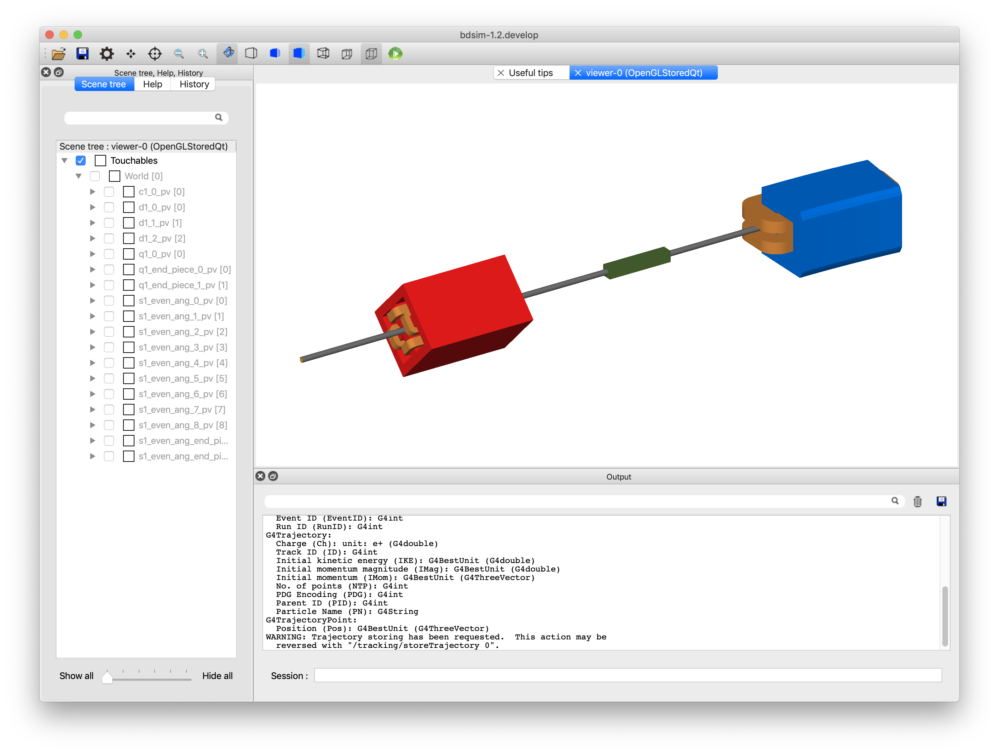
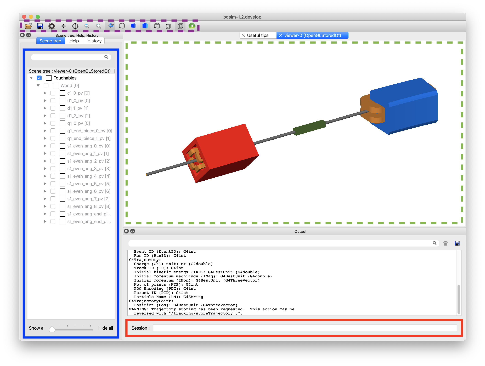
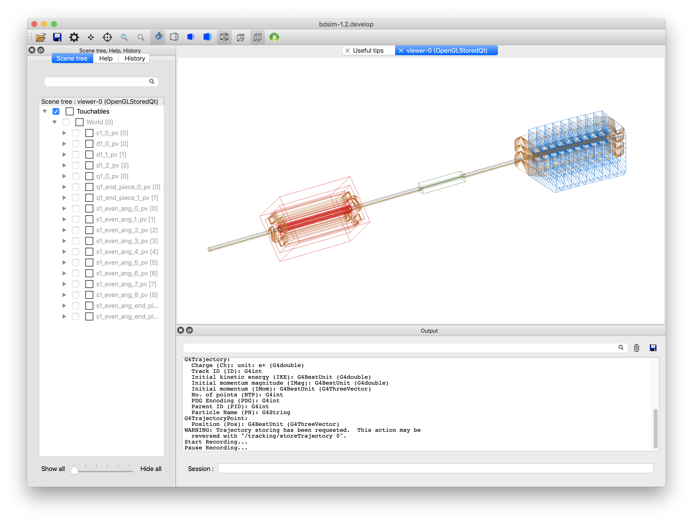
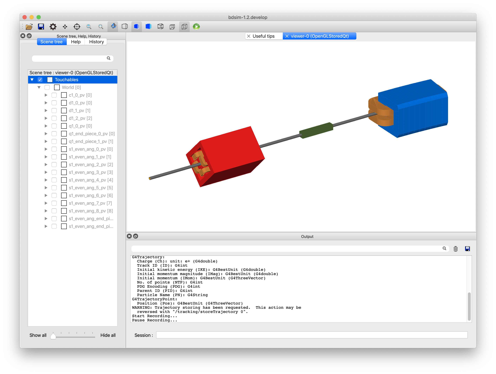
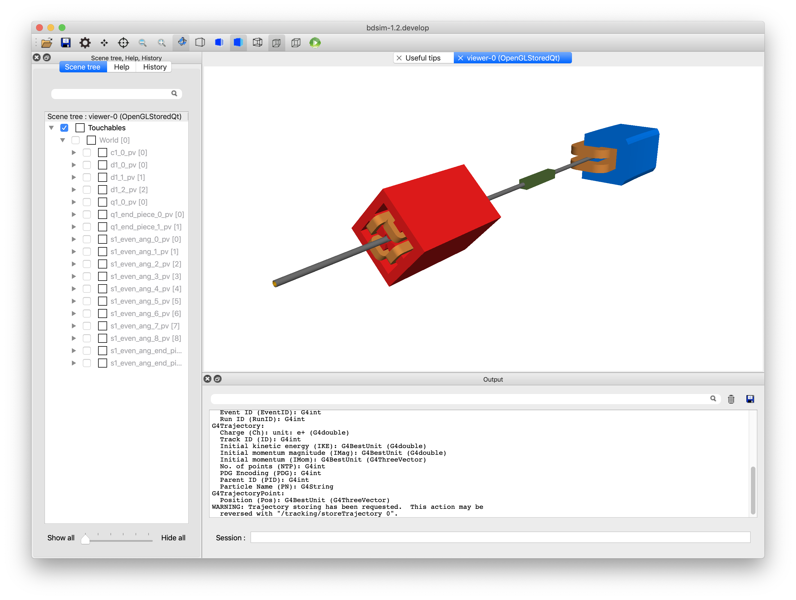
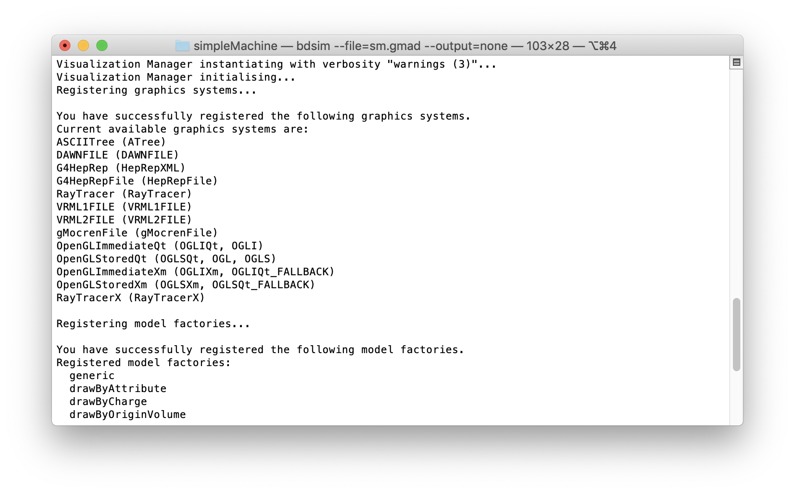

Visualisation
Note
If using the visualiser over X-Windows on a Mac, see XWindows With MacOS.
When BDSIM is executed without the --batch executable option, the
Geant4 visualisation system is used. This is the default behaviour as it is
typical to view and understand the typical outcome of a model before running larger
simulations in batch mode. By default, BDSIM uses the OpenGL Qt visualiser
as it’s very easy to work with and has a rich feature set.
To use this visualisation, Geant4 must have been compiled with the Qt visualiser option turned on, which is non-default. Qt is however, the most widely used visualiser and recommended by Geant4. See Adding Other Visualisers for more.
Below are the most commonly used commands and the full set of features is described in Visualisation Features.
Using the visualiser means that BDSIM will use more memory as it is required to store the trajectories of all particles to display them. By default, only 100 events will be accumulated for display. Events outside this will be discarded from the visualisation.
Colour Coding
The default colour coding of trajectories is the same as Geant4. This colour coding is green: neutral; blue: positively charged; red: negatively charged.
BDSIM Visualisation Commands
BDSIM provides some extra useful commands.
/bds/beamline/listList all components in the beam line in the terminal./bds/beamline/goto <component name> [instance number]Centre the view at that name exactly. This will only work for items in the main beam line. Note, bends may be split into sections and therefore have a different name than expected - try a straight component./bds/samplers/listList the names of all samplers in the terminal./bds/samplers/viewIssue all the right commands to make the samplers visible./bds/field/drawQuery <query object name>Draw the vector field of a field query object. (“all” can be used too) See Field Map Visualisation - Queries./bds/field/listQueriesList all query objects defined in the input by name to use with the above command.
Common Useful Commands
Execute BDSIM with your input gmad file name:
bdsim --file=sm.gmad
The following is a list of our most commonly used commands that can be used in the session box (terminal prompt) inside the visualiser:
/run/beamOn 3- runs three primary eventsexit- exits the visualiser and BDSIM/vis/viewer/set/viewpointThetaPhi 0 90- sets the view point angle/vis/viewer/set/targetPoint 0 0 20 m- sets the rotation view point at 0,0,20 m as an example/vis/scene/add/axes 0 0 0- adds a set of unit vector axes at position (0,0,0)/vis/drawVolume worlds- view all invisible geometry including samplers/vis/viewer/set/lightsVector 1 1 1- change the orientation of the lighting to roughly opposite/vis/viewer/set/viewpointThetaPhi 180 0- look along the beam line/bds/beamline/goto d1- reposition the view point at beam line element named d1/bds/beamline/goto d1 1- reposition the view point at beam line element named d1 - 2nd usage (zero-counting)/vis/viewer/set/projection p 75- set the viewing style to perspective with angle 75 degrees/vis/viewer/set/projection o- set the projection to orthographic (no perspective)/vis/viewer/addCutawayPlane 0 0 0 m 1 0 0- add a cut away plane along the beam line making everything on one side invisible./vis/viewer/clearCutawayPlanes- get rid of cut away planes
Changing The Colours
We can change the trajectory colours using Geant4 visualiser commands. By default, BDSIM uses the draw by charge colouring. Here is an example of modifying this to make neutral particles (e.g. numerous photons) semi-transparent so as not to dominate.
/vis/modeling/trajectories/create/drawByCharge
/vis/modeling/trajectories/drawByCharge-0/setRGBA 0 0 0.8 0 0.1
The numbers are charge (e.g. -1,0,1), R G B A
Visualisation Features
The default OpenGL Qt visualiser is shown below.
{kind=link}

The visualiser is shown again below with some interesting parts highlighted. These are:
Green dashed box middle Main visualiser window - view of the model
Purple dashed box top left Control buttons that are described in more detail in Control Buttons
Blue box on the left Scene tree - expand this to see a full list of all volumes in the simulation.
Orange box top left Help browser where you can search for all commands in the visualiser
Red box bottom Session - enter commands here.
{kind=link}

{kind=link}
Drawing Styles
The model may be viewed as a wireframe model, wireframe and solid and in all cases with or without perspective. Some examples of this are shown below for the same model. These are all controlled easily from the buttons at the top. There are also commands that will work to control these as documented in Geant4.
{kind=link}

As a wireframe model.
{kind=link}

With both solid and wireframe visualisation (subtle lines on each piece of geometry).
{kind=link}

With perspective.
Visualising Step Points
In the visualiser there are no truly curved tracks, but only straight lines between points. Therefore, if you expect to visualise spiral or helical motion of a particle, you may simple see a straight line depending on whether many short steps are taken or one long step is taken. In either case, Geant4 correctly calculates the particle motion and approach to nearby boundaries.
Remember, the visualiser displays straight lines between step points. If smooth or curved motion
is not observed then more step points should be taken. This can be controlled by setting the
option, maximumStepLength (see Tracking Options).
In the visualiser, the individual step points can be seen by telling the visualiser to colour each step point with a dot. The following commands achieve this:
/vis/modeling/trajectories/create/generic
/vis/modeling/trajectories/generic-0/default/setDrawStepPts true
/vis/modeling/trajectories/generic-0/default/setStepPtsSize 16
The name “generic-0” is the name of the trajectory modelling instance created by the first command. If you have created other instances, this may have a different name, but can be found using tab complete in the visualiser terminal.
After these commands, run an event or two to see the tracks with (yellow by default) dots at each step point.
Default and Custom Visualisers
Strictly speaking, a visualisation macro must be supplied to Geant4 to tell it what to display. For convenience, BDSIM provides a set of macros that display the geometry and add a few useful buttons and menus to the user interface. To use these, the user need only not specify a specific visualisation macro.
bdsim --file=mylattice.gmad
Note also no
--batchcommand
If you wish to use a different visualiser, you may specify this by using your own visualisation macro with BDSIM. This can be done using the following command:
bdsim --file=mylattice.gmad --vis_mac=othervis.mac
where othervis.mac is your visualisation macro. It is recommended to copy
and edit the default BDSIM visualisation macro (bdsim/vis/bdsim_default_vis.mac).
When running, BDSIM looks for the macros in the installation directory and then the
build directory if it exists. The user can edit this files directly as a default
for BDSIM on their system. (e.g. <bdsim-install-dir>/vis/*.mac).
The user can also specify an optional macro to run after the visualisation has started. This way, you can use the default BDSIM visualisation but run your own macro at the beginning. This may be useful for particular view points or visualisation settings.
bdsim --file=mylattice.gmad --geant4Macro=viewpoint.mac
Note
This macro is run after the geometry is ‘closed’ in Geant4 terminology and the physics list is fixed.
Adding Other Visualisers
BDSIM makes use of the visualisers Geant4 was compiled with on your system.
To see the list of visualiser, include the option:
option, visVerbosity=1;
in the input GMAD file. The default value is 0, which means no print out at all.
Then, when BDSIM is started interactively
(i.e. without the --batch command), Geant4
will print a list of all available visualisers that are available. Below is an
example excerpt from the terminal output that shows the list of available
visualisers on the developer’s system.
{kind=link}

By default, BDSIM uses the OpenGL Qt visualiser - we highly recommend this, as it is the most modern one with the best feature set. For Geant4.11.2, BDSIM uses whatever the default best visualiser is available in Geant4. This is usually Vtk, then Qt.
To add another available visualiser, you must change the build options of Geant4 (in ccmake), recompile and install it; then you must recompile BDSIM against the new Geant4. In the case where you simply update the Geant4 options in the same installation, this process is relatively quick and recompiling BDSIM only re-links the libraries together (the last quick step of compilation).
For Geant4 to enable other visualisers, it will require certain other 3rd party libraries to be present. On Mac, these can be found through a package manager such as MacPorts and on linux, through whatever package manager is available (e.g. yum). These must be installed before reconfiguring Geant4.
See Geant4 Installation Guide for more details on configuring Geant4.